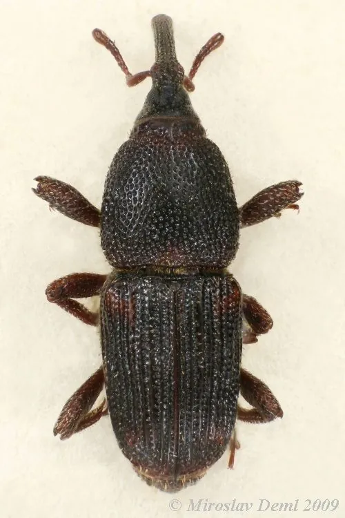

昆虫 · 动物界
玉米象 Sitophilus zeamais

储粮中最常见的害虫之一，成虫在玉米、稻谷等粮粒上钻孔产卵，幼虫在粮粒内蛀食，造成粮食损耗。
- 分类
- 门节肢动物门纲昆虫纲目鞘翅目科象甲科属米象属
- 栖息环境
- 粮仓、农户储粮容器、粮食加工厂与储粮堆
- 地理分布
- 全球分布，中国各地储粮环境中常见
- 保护级别
- IUCN 暂无评估；中国常见储粮害虫，无保护级别
物种志
玉米象体长 3–5 毫米，身体呈深褐或黑褐色，头部前方延伸出细长的吻部，鞘翅上有纵向刻点和浅色小斑，足短而有力。它能飞行，善于在粮堆中钻行，成虫和幼虫都生活在粮粒内外。
它是世界性分布的储粮害虫，在中国各地粮仓、农户储粮和加工厂中都很常见，主要危害玉米、稻谷、小麦、高粱等谷物。雌虫用吻部在粮粒上钻孔，把卵产在孔内并封口，幼虫孵化后就在粮粒内部蛀食，把粮粒蛀空，成虫也会取食粮粒表面，造成粮食重量下降和霉变。它一年可发生 4–6 代，在温暖潮湿的粮仓中繁殖迅速。防治上应控制粮食水分、保持低温干燥、密闭储藏，并配合磷化铝熏蒸等科学方法；它对人体无害，但被其蛀食的粮食品质会下降。
形态与习性
- 食性成虫和幼虫取食玉米、稻谷、小麦等粮粒
- 体长3–5 mm
- 寿命成虫约 3–6 个月，一年 4–6 代
- 繁殖雌虫在粮粒上钻孔产卵，幼虫在粒内蛀食
- 活动节律昼夜活动，温暖时活动频繁
- 危害蛀空粮粒，造成粮食损耗和霉变
趣味知识
- 玉米象雌虫用吻部在粮粒上钻孔，把卵产在孔里再封上口。
- 它的幼虫在粮粒内部生活，从外表往往看不出粮食已被蛀空。
- 保持储粮干燥低温，是预防玉米象繁殖的关键措施。